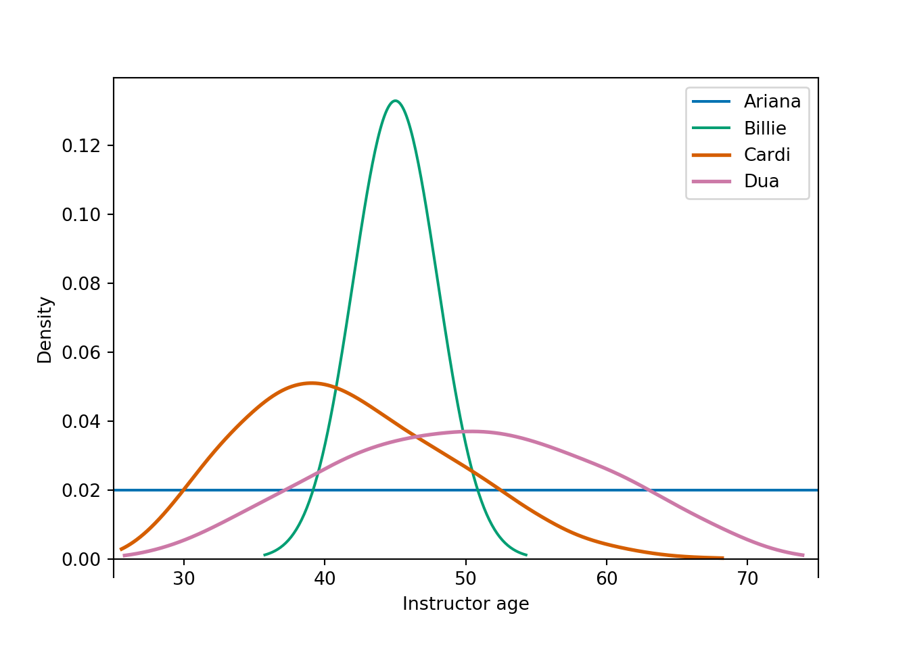

1.4 Interpretations of Statistics
In the previous sections we have seen two interpretations of statistics: relative frequency and subjective. These two interpretations provide the philosophical foundation for two schools of statistics: frequentist (hypothesis tests and confidence intervals that you’ve seen before) and Bayesian. This section provides a very brief introduction to some of the main ideas in Bayesian statistics. The examples in this section only motivate ideas. We will fill in lots more details throughout the course.
Example 1.9 How old do you think your instructor (Professor Ross) currently is6? Consider age on a continuous scale, e.g., you might be 20.73 or 21.36 or 19.50.
In this example, you will use probability to quantify your uncertainty about your instructor’s age. You only need to give ballpark estimates of your subjective probabilities, but you might consider what kinds of bets you would be willing to accept like in Example 1.3. (This exercise just motivates some ideas. We’ll fill in lots of details later.)
- What is your subjective probability that your instructor is at most 30 years old? More than 30 years old? (What must be true about these two probabilities?)
- What is your subjective probability that your instructor is at most 60 years old? More than 60 years old?
- What is your subjective probability that your instructor is at most 40 years old? More than 40 years old?
- What is your subjective probability that your instructor is at most 50 years old? More than 50 years old?
- Fill in the blank: your subjective probability that your instructor is at most [blank] years old is equal to 50%.
- Fill in the blanks: your subjective probability that your instructor is between [blank] and [blank] years old is equal to 95%.
- Let \(\theta\) represent your instructor’s age at midnight on Jan 4, 2021. Use your answers to the previous parts to sketch a continuous probability density function to represent your subjective probability distribution for \(\theta\).
- If you ascribe a probability distribution to \(\theta\), then are you treating \(\theta\) as a constant or a random variable?
Solution. to Example 1.9
Show/hide solution
Even though in reality your instructor’s current age is a fixed number, its value is unknown or uncertain to you, and you can use probability to quantify this uncertainty. You would probably be willing to bet any amount of money that your instructor is over 20 years old, so you would assign a probability of 100% to that event, and 0% to the event that he’s at most 20 years old. Let’s say you’re pretty sure that he’s over 30, but you don’t know that for a fact, so you assign a probability of 99% to that event (and 1% to the event that he’s at most 30). You think he’s over 40, but you’re even less sure about that, so maybe you assign the event that he’s over 40 a probability of 67% (say you’d accept a bet at 2 to 1 odds.) You think there’s a 50/50 chance that he’s over 50. You’re 95% sure that he’s between 35 and 60. And so on. Continuing in this way, you can start to determine a probability distribution to represent your beliefs about the instructor’s age. Your distribution should correspond to your subjective probabilities. For example, the distribution should assign a probability of 67% to values over 40.
This is just one example. Different students will have different distributions depending upon (1) how much information you know about the instructor, and (2) how that information informs your beliefs about the instructor’s age. We’ll see some example plots in the next exercise.
Regarding the last question, since we are using a probability distribution to quantify our uncertainty about \(\theta\), we are treating \(\theta\) as a random variable.
Recall that a random variable is a numerical quantity whose value is determined by the outcome of a random or uncertain phenomenon. The random phenomenon might involve physically repeatable randomness, as in “flip a coin 10 times and count the number of heads.” But remember that “random” just means “uncertain” and there are lots of different kinds of uncertainty. For example, the total number of points scored in the 2021 Superbowl will be one and only one number, but since we don’t know what that number is we can treat it as a random variable. Treating the number of points as a random variable allows us to quantify our uncertainty about it through probability statements like “there is a 50% chance that fewer than 45 points will be scored in Superbowl 2021”.
The (probability) distribution of a random variable specifies the possible values of the random variable and a way of determining corresponding probabilities. Like probabilities themselves, probability distributions of random variables can also be interpreted as:
- relative frequency distributions, e.g., what pattern would emerge if I simulated many values of the random variable? or as
- subjective probability distributions, e.g., which potential values of this uncertain quantity are relatively more plausible than others?
As the name suggests, different individuals might have different subjective probability distributions for the same random variable.
Example 1.10 Continuing Example 1.9, the plot below displays the subjective probability distribution of the instructor’s age of four students.

- Since age is treated as a continuous random variable, each of the above plots is a probability “density”. Explain briefly what this means. How is probability represented in density plots like these?
- Rank the students in terms of their subjective probability that the instructor is at most 40 years old.
- Rank the students in terms of their answers to the question: your subjective probability that your instructor is at most [blank] years old is equal to 50%.
- Rank the students in terms of their uncertainty about the instructor’s age. Who is the most uncertain? The least?
Solution. to Example 1.10
Show/hide solution
- In a density plot, probability is represented by area under the curve. The total area under each curve is 1, corresponding to 100% probability. The density height at any particular value \(x\) represents the relative likelihood that the random variable takes a value “close to” \(x\). (We’ll consider densities in more detail later.)
- Each student’s subjective probability that the instructor is at most 40 is equal to the area under her subjective probability density over the range of values less than 40. Billie has the smallest probability, then Dua, then Ariana, then Cardi has the largest probability.
- Now we want to find the “equal areas point” of each distribution. From smallest to largest: Cardi then Billie, and Ariana and Dua appear to be about the same. The equal areas point appears to be around 40 or so for Cardi. It’s definitely less than 45, which appears to the equal areas point for Billie. The equal areas point for Ariana is 50 (halfway between 25 and 75), and Dua’s appears to be about 50 also.
- Ariana is most uncertain, then Dua, then Cardi, then Billie is the least uncertain. Each distribution represents 100% probability, but Ariana stretches this probability over the largest range of possibe values, while Billie stretches this over the shortest. Ariana is basically saying the instructor can be any age between 25 and 75. Billie is fairly certain that the instructor is close to 45, and she’s basically 100% certain that the instructor is between 35 and 55.
The previous examples introduce how probability can be used to quantify uncertainty about unknown numbers. One key aspect of Bayesian analyses is applying a subjective probability distribution to a parameter in a statistical model.
Example 1.11 Let \(\theta_b\) represent the proportion of current Cal Poly students who have ever read any of the books in the Harry Potter series. Let \(\theta_m\) represent the proportion of current Cal Poly students who have ever seen any of the movies in the Harry Potter series.
- Are \(\theta_b\) and \(\theta_m\) parameters or statistics? Why?
- Are the values of \(\theta_b\) and \(\theta_m\) known or unknown, certain or uncertain?
- What are the possible values of \(\theta_b\) and \(\theta_m\)?
- Sketch a probability distribution representing what you think are more/less credible values of \(\theta_b\). Repeat for \(\theta_m\). Are you more certain about the value of \(\theta_b\) or \(\theta_m\); how is this reflected in your distributions?
- Suppose that in a class of 35 Cal Poly students, 21 have read a Harry Potter book, and 30 have seen a Harry Potter movie. Now that we have observed some data, sketch a probability distribution representing what you think are more/less credible values of \(\theta_b\). Repeat for \(\theta_m\). How do your distributions after observing data compare to the distributions you sketched before?
Solution. to Example 1.11
Show/hide solution
The population of interest is current Cal Poly students, so \(\theta_b\) and \(\theta_m\) are parameters. We don’t have relevant data for the entire population, but we could collect data on a sample.
Since we don’t have data on the entire population, the values of \(\theta_b\) and \(\theta_m\) are unknown, uncertain.
\(\theta_b\) and \(\theta_m\) are proportions so they take values between 0 and 1. Any value on the continuous scale between 0 and 1 is theoretically possible, though the values are not equally plausible.
Results will vary, but here’s my thought process. I think that a strong majority of Cal Poly students have seen at least one Harry Potter movie, maybe 80% or so. I wouldn’t be that surprised if it were even close to 100%, but I would be pretty surprised if it were less than 60%.
However, I’m less certain about \(\theta_b\). I suspect that fewer than 50% of students have read at least one Harry Potter book, but I’m not very sure and I wouldn’t be too surprised if it were actually more than 50%.
See the figure on the left in 1.4 for what my subjective probability distributions might look like. Since I am more uncertain about \(\theta_b\), its density is “spread out” over a wider range of values.
The values of \(\theta_b\) and \(\theta_m\) are still unknown, but I am less uncertain about their values now that I have observed some data. The sample proportion who have watched a Harry Potter movie is \(30/35 = 0.857\), which is pretty consistent with my initial beliefs. But now I update my subjective distribution to concentrate even more of my subjective probability on values in the 80 percent range.
I had suspected that \(\theta_b\) was less than 0.5, so the observed sample proportion of \(21/35 = 0.6\) goes against my expectations. However, I was fairly uncertain about the value of \(\theta_m\) prior to observing the data, so 0.6 is not too surprising to me. I update my subjective distribution so that it’s centered closer to 0.6, while still allowing for my suspicion that \(\theta_b\) is less than 0.5.
See the figure on the right in 1.4 for what my subjective probability distributions might look like after observing the sample data. Of course, the sample proportions are not necessarily equal to the population proportions. But if the samples are reasonably representative, I would hope that the observed sample proportions are close to the respective population proportions. Even after observing data, there is still uncertainty about the parameters \(\theta_b\) and \(\theta_m\), and my subjective distributions quantify this uncertainty.
Figure 1.4: Example subjective distributions in Example 1.11. Left: prior to observing sample data. Right: after observing sample data.
Recall some statistical terminology.
- Observational units (a.k.a., cases, individuals, subjects) are the people, places, things, etc we collect information on.
- A variable is any characteristic of an observational unit that we can measure.
- Statistical inference involves using data collected on a sample to make conclusions about a population.
- Inference often concerns specific numerical summaries, using values of statistics to make conclusions about parameters.
- A parameter is a number that describes the population, e.g., population mean, population proportion. The actual value of a parameter is almost always unknown.
- Parameters are often denoted with Greek letters. We’ll often use the Greek letter \(\theta\) (“theta”) to denote a generic parameter.
- A statistic is a number that describes the **sample, e.g., sample mean, sample proportion*.
Parameters are unknown numbers. In “traditional”, frequentist statistical analysis, parameters are treated as fixed — that is, not random — constants. Any randomness in a frequentist analysis arises from how the data were collected, e.g., via random sampling or random assignment. In a frequentist analysis, statistics are random variables; parameters are fixed numbers.
For example, a frequentist 95% confidence interval for \(\theta_b\) in the previous example is [0.434, 0.766]. We estimate with 95% confidence that the proportion of Cal Poly students that have read any of the books in the Harry Potter series is between 0.434 and 0.766. Does this mean that there is a 95% probability that \(\theta_b\) is between 0.434 and 0.766? No! In a frequentist analysis, the parameter \(\theta_b\) is treated like a fixed constant. That constant is either between 0.434 and 0.766 or it’s not; we don’t know which it is, but there’s no probability to it. In a frequentist analysis, it doesn’t make sense to say “what is the probability that \(\theta_b\) (a number) is between 0.434 and 0.766?” just like it doesn’t make sense to say “what is the probability that 0.5 is between 0.434 and 0.766?” Remember that 95% confidence derives from the fact that for 95% of samples the procedure that was used to produce the interval [0.434, 0.766] will produce intervals that contain the true parameter \(\theta_b\). It is the samples and the intervals that are changing from sample to sample; \(\theta_b\) stays constant at its fixed but unknown value. In a frequentist analysis, probability quantifies the randomness in the sampling procedure.
On the other hand, in a Bayesian statistical analysis, since a parameter \(\theta\) is unknown — that is, it’s value is uncertain to the observer — \(\theta\) is treated as a random variable. That is, in Bayesian statistical analyses unknown parameters are random variables that have probability distributions. The probability distribution of a parameter quantifies the degree of uncertainty about the value of the parameter. Therefore, the Bayesian perspective allows for probability statements about parameters. For example, a Bayesian analysis of the previous example might conclude that there is a 95% chance that \(\theta_b\) is between 0.426 and 0.721. Such a statement is valid in the Bayesian context, but nonsensical in the frequentist context.
In the previous example, we started with distributions that represented our uncertainty about \(\theta_b\) and \(\theta_m\) based on our “beliefs”, then we revised these distributions after observing some data. If we were to observe more data, we could revise again. In this course we will see (among other things) (1) how to quantify uncertainty about parameters using probability distributions, and (2) how to update those distributions to reflect new data.
Throughout these notes we will focus on Bayesian statistical analyses. We will occasionally compare Bayesian and frequentist analyses and viewpoints. But we want to make clear from the start: Bayesian versus frequentist is NOT a question of right versus wrong. Both Bayesian and frequentist are valid approaches to statistical analyses, each with advantages and disadvantages. We’ll address some of the issues along the way. But at no point in your career do you need to make a definitive decision to be a Bayesian or a frequentist; a good modern statistician is probably a bit of both.
You could probably get a pretty good idea by searching online, but don’t do that. Instead, answer the questions based on what you already know about me.↩︎